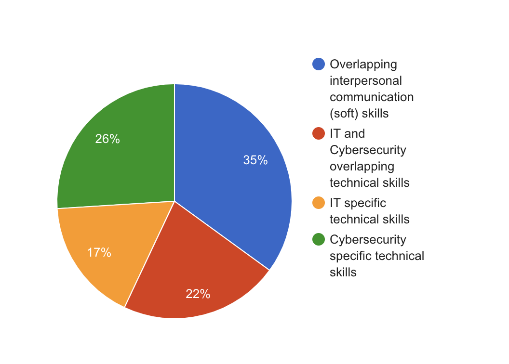
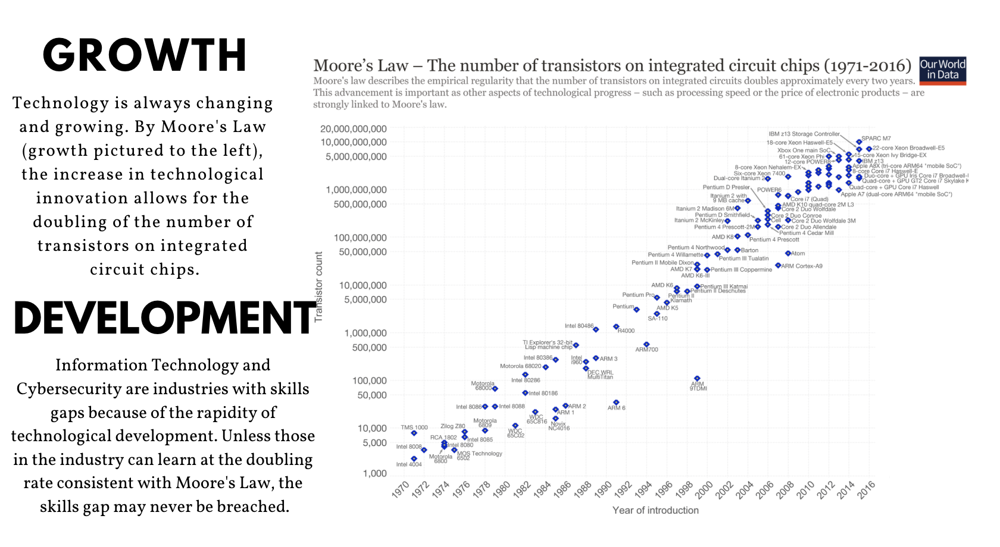
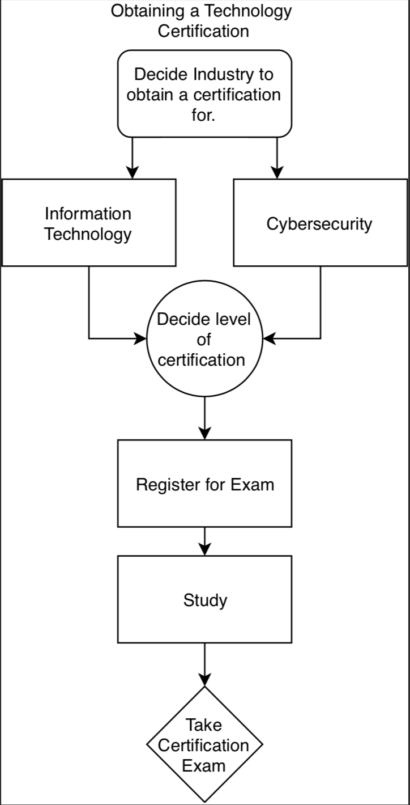

Home
Graphical Illustrations
Executive Summary
Research
Recommendations
References
Glossary & Appendix
The Skills Gap in Information Technology and Cybersecurity: A Recommendation Report

Percentages of Gaps in Skills Seen in Study Focus Areas

Growth of Technology as Cause for the Skills Gap

Obtaining a Certification to Refresh Knowledge